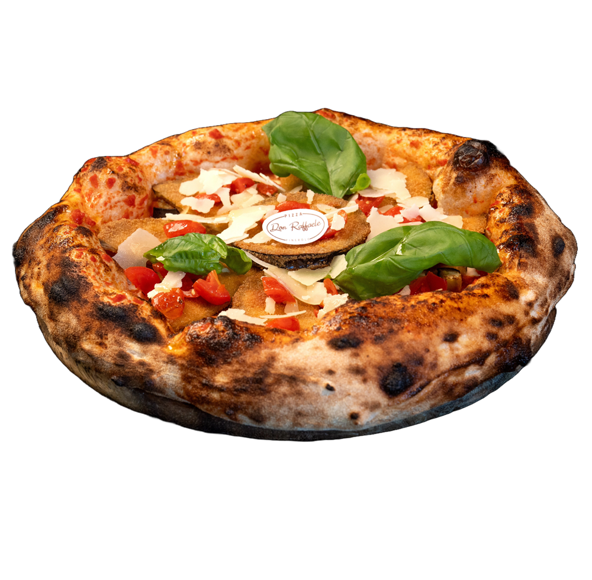
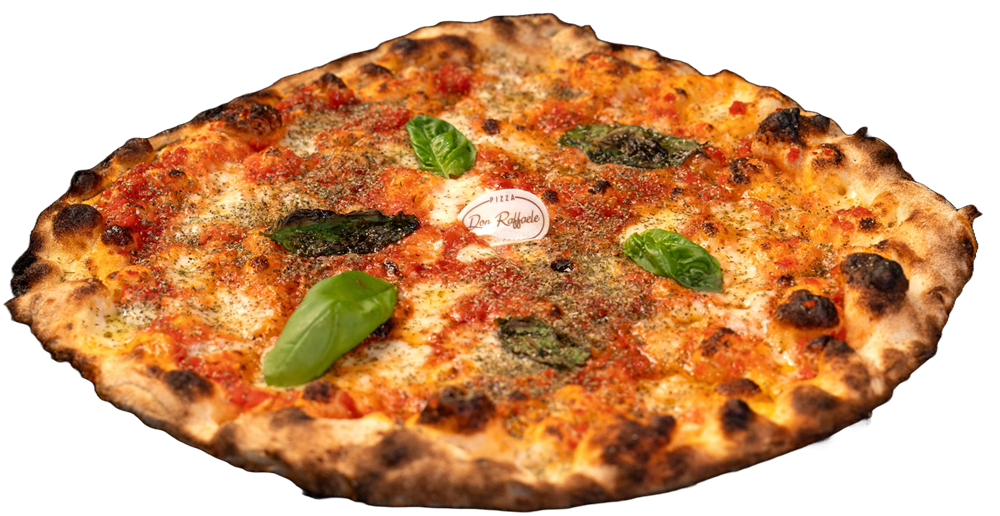
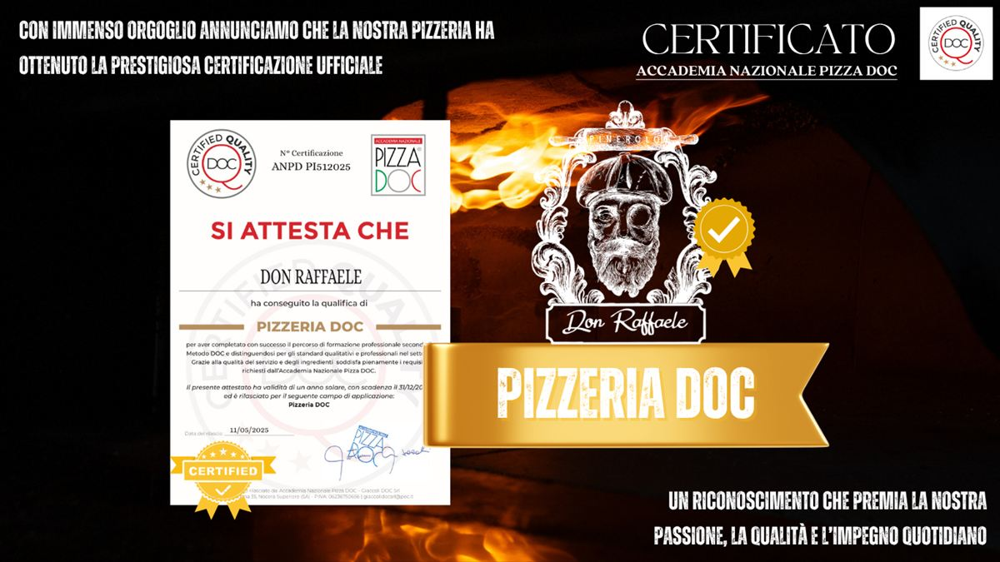

Pinerolo · Piazza Garibaldi
L'essenza della contemporaneità, in una pizza.
Pizzeria DOC certificataAccademia Nazionale Pizza DOC
Maturare significa crescere. Un po' come un uomo, un po' come una pizza.
ogni fetta è un viaggio nel cuore dell'Italia
Tre impasti, una sola ricerca
Napoletana o romana?
Trascina la linea sulla pizza e guarda la differenza: il cornicione alto e alveolato della napoletana, la stesura sottile e croccante della romana.
Contemporanea
Impasto idratato e digeribile, frutto di una ricerca continua per offrirvi un'esperienza unica.
Impasto napoletano
Cornicione pronunciato e alveolato all'interno, per farti assaporare la vera pizza napoletana.
Impasto romano
Più maturato, fragrante e croccante: l'aria si distende su tutta la pizza, come vuole la tradizione.



Un riconoscimento
Pizzeria DOC
L'Accademia Nazionale Pizza DOC ci ha riconosciuto la qualifica di Pizzeria DOC, dopo il percorso di formazione secondo il Metodo DOC. Un premio alla passione, alla qualità e all'impegno di ogni giorno.
- Certificazione n. ANPD PI512025
- Standard su ingredienti, impasti e servizio
- Olio EVO biologico e basilico fresco su ogni pizza